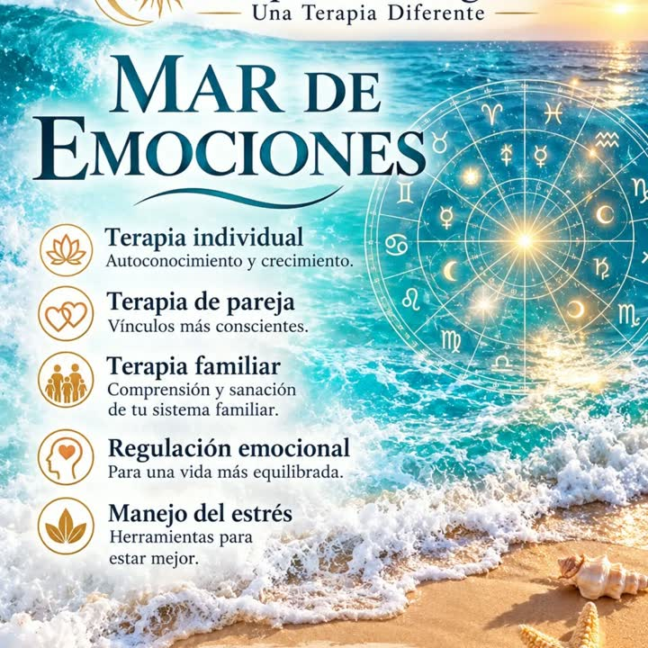
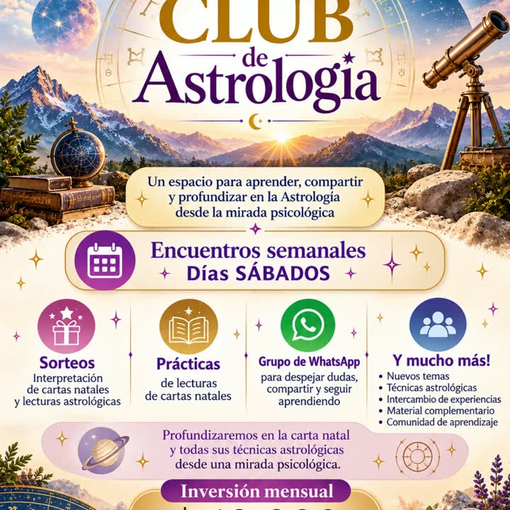
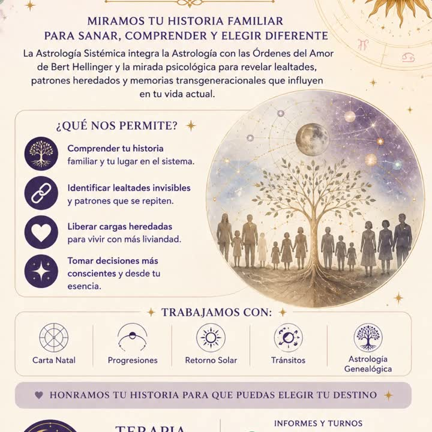
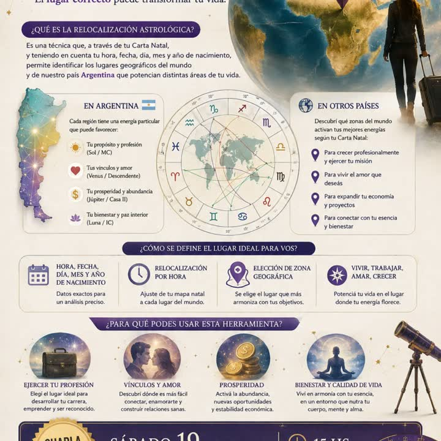

Astrología
- Carta natal
- Tránsitos
- Progresiones
- Retorno solar
- Compatibilidad
- Astrología psicológica
AC Psicoastrología · desde Argentina DC
Psicología y astrología juntas: hacés terapia y aprendés a leer tu carta natal al mismo tiempo. Consultas, clases virtuales y encuentros con Alejandra.
Casa I · La propuesta
La psicoastrología usa tu carta natal como un mapa para mirarte: tus talentos, tus desafíos, tus vínculos y lo que se repite. Y la terapia le pone palabras y herramientas a lo que ese mapa muestra.
“Ofrezco aprendizaje de carta natal y terapia al mismo tiempo.”— Alejandra

Casa IV · Mar de emociones
Autoconocimiento y crecimiento.
Vínculos más conscientes.
Comprensión y sanación de tu sistema familiar.
Para una vida más equilibrada.
Herramientas para estar mejor.
Casa X · En solo 30 minutos
¡Vos elegís, yo te guío!
Una consulta enfocada en el tema astrológico que hoy te importa. Tocá uno y queda cargado en tu consulta.
Casa IX · Clases particulares
Aprendé a integrar el lenguaje de los astros con la simbología del Tarot Rider-Waite. Clases personalizadas en modalidad virtual, a tu ritmo y con acompañamiento.
Astrología
Tarot Rider-Waite
Casa XI · Comunidad
Un espacio para aprender, compartir y profundizar en la astrología desde la mirada psicológica.
Encuentros semanalesDías sábados

Casa VIII · Más miradas

Integra la astrología con las Órdenes del Amor de Bert Hellinger y la mirada psicológica para ver lealtades, patrones heredados y memorias transgeneracionales que influyen en tu vida actual.
Honramos tu historia para que puedas elegir tu destino.
Consultar →
A partir de tu carta natal y tu hora, fecha y lugar de nacimiento, identifica los lugares de Argentina y del mundo que potencian tu profesión, tus vínculos, tu prosperidad y tu bienestar.
El lugar correcto puede transformar tu vida.
Consultar →Charlas y talleres · las próximas fechas, en Instagram
Tu carta · Prepará tu consulta
Con tu fecha, hora y lugar de nacimiento Alejandra ya puede mirar tu carta antes de hablar. Mientras completás, la rueda pone tu signo solar en el ascendente.
Quién te acompaña
Planteos claros · Contenido práctico · Mirada integral
Desde la astrología y la conciencia.
Casa III · Preguntas
No. La propuesta es aprender a leer tu carta natal mientras trabajás en terapia lo que te pasa: las dos cosas al mismo tiempo.
Con esos tres datos se arma la carta natal. La hora y el lugar definen el ascendente y las casas, por eso conviene que sean lo más exactos posible. Si no sabés tu hora, avisalo igual en el mensaje.
Las clases particulares de astrología y tarot Rider-Waite son en modalidad virtual, a tu ritmo y con acompañamiento: material de estudio en PDF, clases grabadas, prácticas y ejercicios.
Hay consultas de 30 minutos enfocadas en el tema que sea importante para vos: carta natal, vínculos, trabajo, retorno solar, tránsitos o bienestar. Para terapia, días y modalidad se coordinan por WhatsApp.
Un espacio para aprender, compartir y profundizar en la astrología desde la mirada psicológica, con encuentros semanales los sábados, prácticas de lectura de cartas natales, sorteos y grupo de WhatsApp. El valor mensual se consulta por WhatsApp.
Un mensaje a tiempo también puede salvar una vida. Si pensás en hacerte daño, llamá ahora a la Línea 135 (gratuita desde CABA y GBA) o al (011) 5275-1135 desde todo el país, o al 911 si es una emergencia.
Escribile a Alejandra y coordinan tu consulta, tus clases o tu lugar en el Club.
WhatsApp 11 3061-9484 @universosagradoa